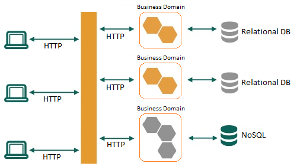

Desarrollo web orientado a API's y Microservicios
Un enfoque moderno
Clase 9
Diego Acuña Rozas
Ing. Civil en Informática - UTFSM
diego.acuna@mailbox.org
Clase de hoy
Vamos a revisar algunos aspectos de infraestructura y deployment.
-
Arquitecturas orientadas a microservicios
- Enfoque tradicional: monolithic apps
- Microservicios
- Implementación de microservicios
-
Deployment
- Containers y Docker: porqué y para qué
- Consultas y comentarios
Desarrollo de software vs Arquitectura de software
Ya hemos revisado los aspectos de desarrollo de construcción a API's, en particular:
- Estudiamos la construcción del backend
- Estudiamos la construcción del frontend
- Estudiamos aspectos de seguridad de una API
Hoy nos vamos a concentrar en aspectos de la infraestructura de nuestros sistemas y de como hacemos el deployment. Comencemos entendiendo la diferencia entre desarrollo de software y arquitectura de software...
Desarrollo de software vs Arquitectura de software
Consideremos una aplicación web ya desarrollada:
Desarrollo de software vs Arquitectura de software
Tengamos como supuesto que esta aplicación cumple con todos los requerimientos funcionales solicitados por el cliente. Lo enviamos a producción en un servidor sencillo. Veamos si podemos responder a algunas preguntas:
- ¿Nuestro sistema soporta a millones de usuarios de manera concurrente?
- ¿Cómo sería la latencia de un usuario que ingresa desde Europa?
- ¿Cómo se recupera el sistema ante una caída?
Parecen ser preguntas que no están relacionadas al código del sistema ¿Cómo podemos mejorar nuestro sistema según las preguntas anteriores?
Tiene que ver con la arquitectura del sistema (no con el código)Monolithic Apps
Una aplicación tipo monolithic es aquella que es construida como un único código base en un mismo stack. Por ejemplo, si construimos un blog, podríamos utilizar rails y construir la aplicación completa en "el mismo directorio" (mismo código base). Este enfoque tiene las siguientes ventajas:
- Simple de desarrollar: se configura todo solo 1 vez, buen soporte de IDE's.
- Simple de enviar a producción: solo es necesario enviar a producción una aplicación (por ejemplo un directorio rails, un WAR, etc.
- Escalamiento: son sencillas de escalar según dispongamos de los recursos necesarios.
Monolithic Apps
Es la forma en la que hemos construido aplicaciones históricamente (y también durante este curso).

Monolithic Apps
Si bien es un enfoque sencillo y útil, tiene algunas desventajas:
- Complejidad del código a medida que el sistema crece. Piensen en la documentación, en cómo se integra un nuevo desarrollador al equipo.
- Slow deployment: a medida que el sistema crece, los recursos que utiliza también crecen. Esto ralentiza la puesta en producción del sistema. Piensen que al modificar una pequeña parte del sistema se debe enviar nuevamente a producción el sistema completo.
- Technology Stack: nos atamos a un stack para siempre.
- Escalabilidad en una sola dirección.
Microservicios
Nace en respuesta a las debilidades de las monolithic apps. La idea es construir distintos servicios como distintas aplicaciones. Cada servicio posee una funcionalidad especifica y bien definida. Luego, el sistema completo se compone de un conjunto de servicios.
Microservicios
Este tipo de arquitectura posee un conjunto de ventajas:
- Cada microservicio es relativemente pequeño: facilidad para los desarrolladores, rapidez de deployment.
- Cada servicio se puede enviar a producción de manera separada. El sistema completo se compone de múltiples fases de producción. Esto hace que el deployment sea más rápido y eficiente ya que solo hay que enviar a producción los microservicios que han cambiado.
- Tolerancia a fallas: para que el sistema falle por completo deberían fallar todos los microservicios => baja probabilidad.
- Sin compromiso a un stack: los microservicios son independientes por lo que se pueden utilizar múltiples stacks.
Aunque también tiene sus desventajas...
Microservicios
Desventajas:
- Complejidad adicional al tener un sistema distribuido
- En general el soporte de IDE's está orientado a la construcción de monolithic apps
- ¿Cómo hacemos testing?
- En general los recursos computacionales para sistemas basados en microservicios exceden a los necesarios para monolithic apps
- Dificultad para planificar que debe hacer cada microservicio, definir límites, etc.
- COMUNICACIÓN ENTRE MICROSERVICIOS!
Microservicios: Comunicación
Una pregunta en este tipo de arquitecturas es ¿cómo comunicamos los distintos microservicios que componen un mismo sistema? Existen distintos enfoques:
- API's REST: recordemos que cada microservicio expone una API REST. Si un microservicio quisiera comunicarse con otro bastaría con que hiciera una petición HTTP a la API que expone el otro microservicio. PROBLEMAS: descubrimiento de servicios, co-dependencia, ¿problemas de diseño?
- Bus de mensajes: otro enfoque sería un bus tipo publish/suscribe. Cada microservicio expone un listado de eventos y cuando suceda dicho evento publica un mensaje en un bus. Luego, el broker de mensajes despachará el evento a todos los microservicios interesados. La ventaja es que no existe co-dependencia.
Microservicios vs Monolithic Apps
Microservicios: implementación en el mundo real
¿Necesitamos de un full-stack framework como rails? depende del caso. Si definimos microservicios siguiendo la lógica de que sean bien delimitados y específicos, frameworks de menor tamaño nos ahorrarán recursos y tiempo de desarrollo. Consideremos por ejemplo el DSL Sinatra de ruby:
gem install sinatra
require 'sinatra'
get '/' do
'Hello World'
end
ruby hello_world.rb
Microservicios: implementación en el mundo real
Por defecto, Sinatra utiliza el puerto 4567:
Algunas utilidades:
- sinatra-activerecord: librería que implementa el patrón ActiveRecord y lo integra a sinatra. Nos permitirá conectarnos a bases de datos relacionales al estilo de rails.
- OAuth2: wrapper escrito en Ruby del protocolo OAuth 2.0.
Microservicios: implementación en el mundo real
Dependiendo de la aplicación necesitaremos de distintos recursos. Como consejo, como cada microservicio debe ser autolimitado no es necesario utilizar herramientas fullstack o que requieran de una mayor configuración.
Deberán decidir por cada microservicio que es lo más adecuado a utilizar.
Deployment
Deployment
El paso a producción de un sistema es un proceso que puede resultar tedioso y complejo para el equipo de desarrollo si es que no se utilizan las herramientas correctas. En general, podemos observar los siguientes problemas al realizar el deployment:
- Diferencias entre los entornos de desarrollo y producción (por ejemplo: Windows vs Linux)
- Deployment manual: cada vez que se libera una nueva versión, un desarrollador debe conectarse al servidor (por ejemplo via ssh o sftp) y subir la nueva versión => tristeza para el desarrollador.
- Envíamos una nueva versión a producción y al cliente... le falla! (excusa del desarrollador = en mi computador funciona)
Deployment
Veamos la solución a cada uno de los problemas anteriores:
- Diferencias entre los entornos de desarrollo y producción (por ejemplo: Windows vs Linux) => DOCKER!
- Deployment manual: cada vez que se libera una nueva versión, un desarrollador debe conectarse al servidor (por ejemplo via ssh o sftp) y subir la nueva versión => tristeza para el desarrollador. => CONTINUOUS INTEGRATION (CI)
- Envíamos una nueva versión a producción y al cliente... le falla! (excusa del desarrollador = en mi computador funciona) => TESTING Y CI
Docker
¿Qué es Docker?: "Docker es un proyecto de código abierto que automatiza el despliegue de aplicaciones dentro de contenedores de software, proporcionando una capa adicional de abstracción y automatización de Virtualización a nivel de sistema operativo en Linux. Docker utiliza características de aislamiento de recursos del kernel de Linux, tales como cgroups y espacios de nombres (namespaces) para permitir que "contenedores" independientes se ejecuten dentro de una sola instancia de Linux, evitando la sobrecarga de iniciar y mantener máquinas virtuales."
PALABRAS CLAVES: virtualización, containers, linux!Docker
Docker resuelve varios problemas relacionados con virtualización, microservicios y con los problemas de deployment que estuvimos analizando. En esta clase, nos enfocaremos en utilizar la herramienta para unificar los entornos de desarrollo y producción.
IDEA: tener un entorno de desarrollo equivalente a lo que será el entorno de producción para evitar problemas de incompatibilidades entre sistema operativos. Bajo este enfoque podríamos considerar que Docker es Vagrant mejorado.
Vagrant
Docker
Veamos algunos conceptos claves:
- Docker image: es un archivo que define lo que un container debe poseer. Pueden considerarlas como un esquema de su container. Docker define un repositorio público desde donde pueden obtener imágenes creadas por la comunidad: Docker Hub.
- Containers: se crean a partir una Docker image. Se pueden considerar como una instancia de un docker image. Es donde efectivamente corre su aplicación.
Veamos algunos ejemplos...
Docker: Comandos
-
docker pull: permite obtener una imagen desde Docker Hub. Por ejemplo:
docker pull ubuntu -
docker run imagen: una vez descargada la imagen, podemos crear un container con el comando run.
Por ejemplo:
por defecto, docker ejecutará un comando en el container y luego lo finalizará. Como no hemos especificado ningún comando entonces no veremos ninguna salida. Veamos un echo:docker run ubuntudocker run ubuntu echo "hola mundo"
Docker: Comandos
- docker ps -a: lista el estado de los containers en ejecución/ejecutados.
docker ps -a
> CONTAINER ID IMAGE COMMAND CREATED STATUS
9edd2430a1cc ubuntu:latest "/bin/bash" 9 seconds ago Exited (0) 8 seconds ago
e3b65e84bca3 ubuntu:latest "/bin/bash" 24 seconds ago Exited (0) 23 seconds ago
- docker run -it IMAGEN sh: nos permite ejecutar comandos en el container mediante una sesión interactiva (más útil que ejecutar solo 1 comando). Podemos salir del container con el comando 'exit'.
Tratemos de ocupar alguna imagen de Docker un poco más interesante...
Docker y Rails
Primero instalaremos Docker compose. Esta herramienta permite crear un archivo de configuración .yml para crear y manejar múltiples containers de manera sencilla. Para instalarlo:
curl -L https://github.com/docker/compose/releases/download/1.8.1/docker-compose-`uname -s`-`uname -m` > /usr/local/bin/docker-compose
chmod +x /usr/local/bin/docker-compose
Ahora escribiremos un Dockerfile (especifica lo que debe contener una Docker image) que nos permita generar un container de Docker para una aplicación rails. En este caso utilizaremos la aplicación rails de la clase 2 (Dockerfile en la siguiente ppt).
Docker y Rails
Dockerfile:
FROM ruby:2.2.0
RUN apt-get update -qq && apt-get install -y build-essential
# for postgres
RUN apt-get install -y libpq-dev
# for nokogiri
RUN apt-get install -y libxml2-dev libxslt1-dev
# for capybara-webkit
RUN apt-get install -y libqt4-webkit libqt4-dev xvfb
# for a JS runtime
RUN apt-get install -y nodejs
ENV APP_HOME /myapp
RUN mkdir $APP_HOME
WORKDIR $APP_HOME
ADD Gemfile* $APP_HOME/
RUN bundle install
ADD . $APP_HOME
NOTA: este Dockerfile utiliza la imagen ruby de DockerHub. Para constuir la imagen, se utiliza el comando docker build .
Docker y Rails
Ahora vamos a utilizar docker-compose para crear dos containers, uno para la app de rails y otro para la base de datos postgresql. Primero debemos crear un archivo docker-compose.yml:
version: '2'
services:
db:
image: postgres:9.4.1
ports:
- "5432:5432"
web:
build: .
command: bin/rails server --port 3000 --binding 0.0.0.0
ports:
- "3000:3000"
links:
- db
volumes:
- .:/myapp
Docker y Rails
Lo que indica este archivo es que se deben levantar dos containers:
- db: basado en la imagen postgres y que expone el puerto 5432 en el puerto 5432 del host.
- web: que utiliza el Dockerfile que acabamos de crear (build .). Levanta el servidor de rails y expone el puerto 3000 en el host. Además, en el container utiliza el directorio /myapp para linkearlo con el directorio '.' del host, es decir, el directorio donde está la aplicación de rails.
Para ejecutar el compose:
docker-compose build
Docker y Rails
Dado que estamos utilizando un container para la base de datos, debemos informarle a rails que utilice ese host como servidor de postgresql:
development: &default
adapter: postgresql
database: app_development
min_messages: WARNING
pool: 5
username: postgres
host: db
test:
<<: *default
database: app_test
Docker y Rails
Veamos como podemos ejecutar la imagen para tener nuestro entorno. Primero creamos las bases de datos:
docker-compose run web rake db:create db:setup
docker-compose up
Con esto deberían poder acceder a su API a través del puerto 3000.
Un ejemplo más completo (y complejo) lo pueden ver en: Dockerizing a ruby on rails application .
Comentarios finales
- Beneficios de las arquitecturas basadas en microservicios: desacoplamiento, permite dividir sistemas complejos en partes más sencillas, mejoras en deployment.
- ¿Para qué tipos de proyectos son factibles las arquitecturas basadas en microservicios? ¿Debemos olvidarnos de las monolithic apps?
- Docker como solución a la heterogeneidad de los entornos de desarrollo y producción.
- Docker se basa en una tecnología del kernel de linux, sin soporte nativo para OSX y Windows.
- Piensen como sería el deployment para aplicaciones "Dockerizadas"